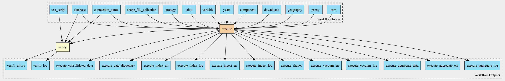

Test harness for pm25_yearly_download.cwl

Workflow
Inputs
Name |
Type |
Default |
Description |
|---|---|---|---|
component |
string[] |
|
Optional components provided as percentages in a separate set of netCDF files |
connection_name |
string |
The name of the section in the database.ini file or a literal |
|
database |
File |
|
Path to database connection file, usually database.ini. This argument is ignored if |
downloads |
Directory |
Local or AWS bucket folder containing netCDF grid files, downloaded and unpacked from Washington University in St. Louis (WUSTL) Box site. Annual and monthly data repositories are described in WUSTL Atmospheric Composition Analysis Group. The annual data for PM2.5 is also available in a Harvard URC AWS Bucket: |
|
geography |
string |
Type of geography: zip codes or counties Supported values: “zip”, “zcta” or “county” |
|
proxy |
string? |
HTTP/HTTPS Proxy if required |
|
ram |
string |
|
Runtime memory, available to the process |
shape_file_collection |
string |
|
Collection of shapefiles, either GENZ or TIGER |
strategy |
string |
|
Rasterization strategy, see documentation for the list of supported values and explanations |
table |
string |
|
The name of the table to store teh aggregated data in |
test_script |
File |
File containing SQL test script |
|
variable |
string |
|
The main variable that is being aggregated over shapes. We have tested the pipeline for PM25 |
years |
int[] |
|
Outputs
Name |
Type |
Description |
|---|---|---|
execute_aggregate_data |
File[] |
|
execute_data_dictionary |
File |
|
execute_consolidated_data |
File[] |
|
execute_shapes |
array |
|
execute_aggregate_log |
array |
|
execute_aggregate_err |
File[] |
|
execute_ingest_log |
File |
|
execute_index_log |
File |
|
execute_vacuum_log |
File |
|
execute_ingest_err |
File |
|
execute_index_err |
File |
|
execute_vacuum_err |
File |
|
verify_log |
File |
|
verify_errors |
File |